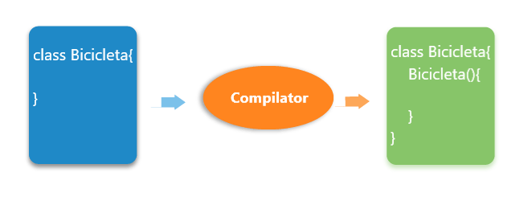

Constructor în Java
În Java, un constructor este un bloc de coduri similar cu metoda. Se apelează atunci când se creează o instanță a clasei. În momentul apelării constructorului, memoria pentru obiect este alocată în memorie.
Este un tip special de metodă care este utilizată pentru a inițializa obiectul.
De fiecare dată când un obiect este creat folosind cuvântul cheie new <numele clasei> (), este chemat cel puțin un constructor.
Se apelează un constructor implicit dacă nu există un constructor disponibil în clasă. În acest caz, compilatorul Java oferă implicit un constructor implicit.
Există două tipuri de constructori în Java: constructor fără argumente și constructor parametrizat.
Notă: Se numește constructor, deoarece construiește valorile în momentul creării obiectului. Nu este necesar să scrieți un constructor pentru o clasă. Acest lucru se datorează faptului că compilatorul Java creează un constructor implicit dacă clasa dvs. nu are.
Crearea unui constructor
Există două reguli definite pentru constructor.
- Numele constructorului trebuie să fie același cu numele clasei sale
- Un constructor nu trebuie să aibă niciun tip de returnare explicit
- Un constructor Java nu poate fi abstract, static, final și sincronizat
Notă: Notă: Putem folosi modificatori de acces în timp ce declarăm un constructor. Controlează crearea obiectului. Cu alte cuvinte, putem avea un constructor privat, protejat, public sau implicit în Java.
Tipuri de contructori
Există două tipuri de constructori în Java:
- Constructor implicit (constructor fără argumente)
- Constructor parametrizat
Un constructor se numește „Constructor implicit” atunci când nu are niciun parametru.
Sintaxa
constructorului implicit:
<numele_clasei>(){}
În acest exemplu, creăm constructorul fără argumente în clasa Bicicleta. Acesta va fi invocat în momentul creării obiectului.
Bicicleta.java
public class Bicicleta{
//crearea unui constructor implicit
Bicicleta(){
System.out.println("Bicicleta a fost
creata");
}
public static void main(String args[]){
//apelare constructor
Bicicleta b = new Bicicleta();
}
}
Afișare:
Bicicleta a fost creata

Un constructor care are un număr specific de parametri se numește constructor parametrizat.
Constructorul parametrizat este utilizat pentru a furniza valori diferite obiectelor distincte. Cu toate
acestea, puteți furniza aceleași valori.
În acest exemplu, am creat constructorul clasei Student care are doi parametri. Putem avea orice număr
de parametri în constructor.
În Java, un constructor este la fel ca o metodă, dar fără tip return. Poate fi, de asemenea,
supraîncărcat ca metodele Java.
Supraîncărcarea constructorului în Java este o tehnică de a avea mai mult de un constructor cu liste de
parametri diferiți. Acestea sunt aranjate astfel încât fiecare constructor să îndeplinească o sarcină
diferită. Acestea sunt diferențiate de compilator prin numărul de parametri din listă și tipurile lor.
Student.java
public class Student{
int id;
String nume;
int varsta;
//crearea unui constructor cu doua argumente
Student(int i, String n){
this.id = i;
this.nume = n;
}
//crearea unui constructor cu trei argumente
Student(int i, String n, int v){
this.id = i;
this.nume = n;
this.varsta = v;
}
void afisare(){
System.out.println(id + " " + nume
" " + varsta);
}
public static void main(String args[]){
//apelare constructor
Student s1 = new Student(111, "Andrei");
Student s2 = new Student(111, "Ion", 25);
s1.afisare();
s2.afisare();
}
}
Afișare:
111 Andrei 0
222 Ion 25